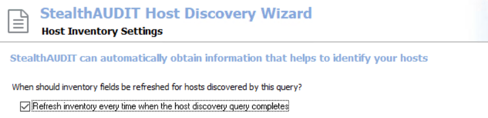
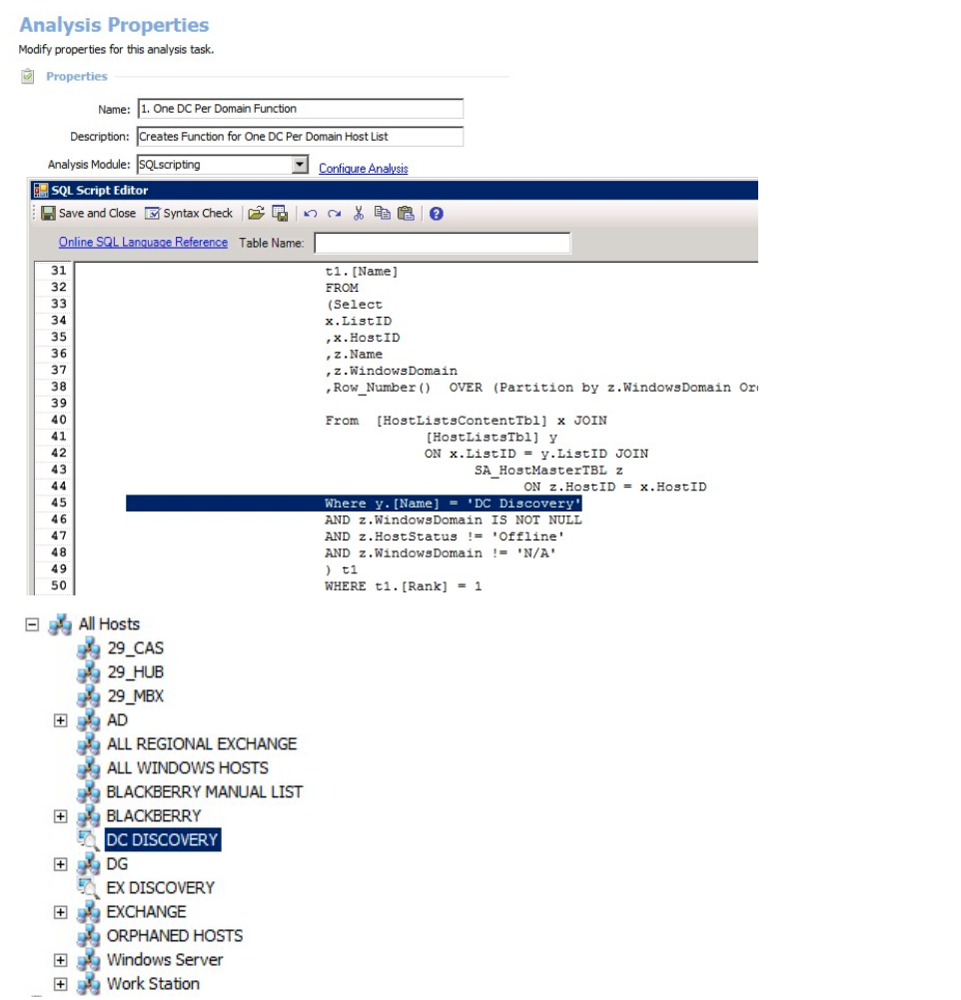
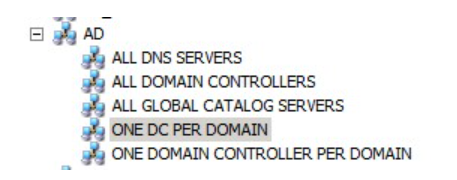

Summary: This article describes how to create a custom One DC Per Domain dynamic host list routine to reference current domain controllers
Issue: Creating A Customized One DC Per Domain Host List
Instructions:
- From the Discovery node in StealthAUDIT, create a Host Discovery Task to discover Domain Controllers from the domain(s) of interest, run it.
- IMPORTANT: Carefully consider the name of the discovery task as it will remain and be referenced by a custom created function
- IMPORTANT: On the 'Host Inventory Settings' page, ensure the option 'Refresh inventory every time when the host discovery query completes' is checked
- Close instances of StealthAUDIT

IMPORTANT: Schedule the host discovery task to run daily or weekly to ensure list contents and online status is updated regularly
- Find and open the file ".. STEALTHbits\StealthAUDIT\SADatabase\predefineviews.ini"; add the following entry to the end of the file:
[One DC Per Domain]
ID={12345678-1111-0000-0001-000000000050}
Filter=((Name IN (SELECT Name FROM CUSTOMOneDcPerDomain())))
HIRefreshType=Manual
HIRefreshFrequency=24
HIRefreshUnit=hours
UserDeleted=False
ConnectionProfile=User default
PlacementPath=AD
- Download, extract, and add the job 'OneDCPerDomain' to your job tree
- The job can be download from the following location: http://downloads.stealthbits.com/access/files/Jobs/JOB_OneDCPerDomain.zip
- Launch StealthAUDIT
- Expand the job, select the Analysis node, open analysis task '1. One DC Per Domain Function'. Modify the following WHERE clause to reflect the name of the discovery task that was created in step 1. Exact spelling of the list is critical. In this example, the name of the discovery task created is named 'DC Discovery'. Simply change 'DC Discovery' highlighted below to the name of your task/list

- Save and close the analysis task; run the job.
- Re-run the job to recreate the function if criteria changes
- Close and Open StealthAUDIT, the newly created custom list 'ONE DC PER DOMAIN' will be visible within the AD Host List Group

- Replicate job and/or repeat the process on other SA consoles as desired
Product: StealthAUDIT
Module: SA - Core;SA - DC - Active Directory
Versions: All versions
Legacy Article ID: 1448